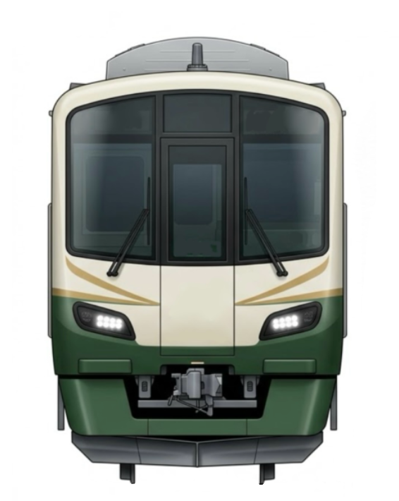
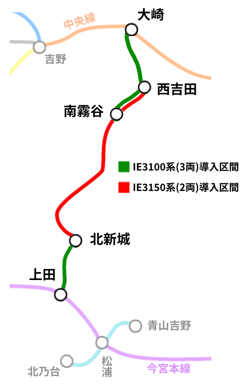
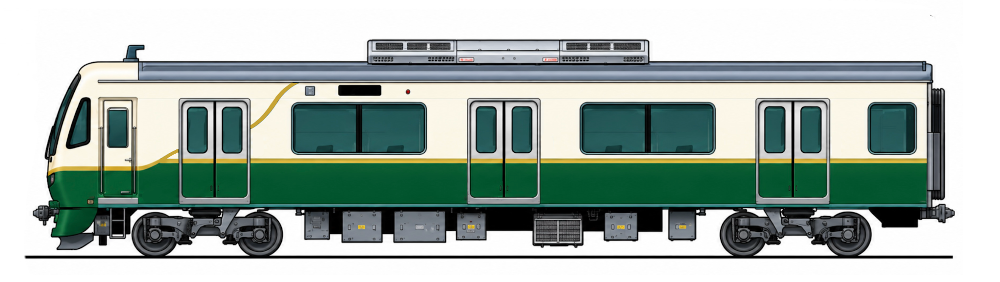
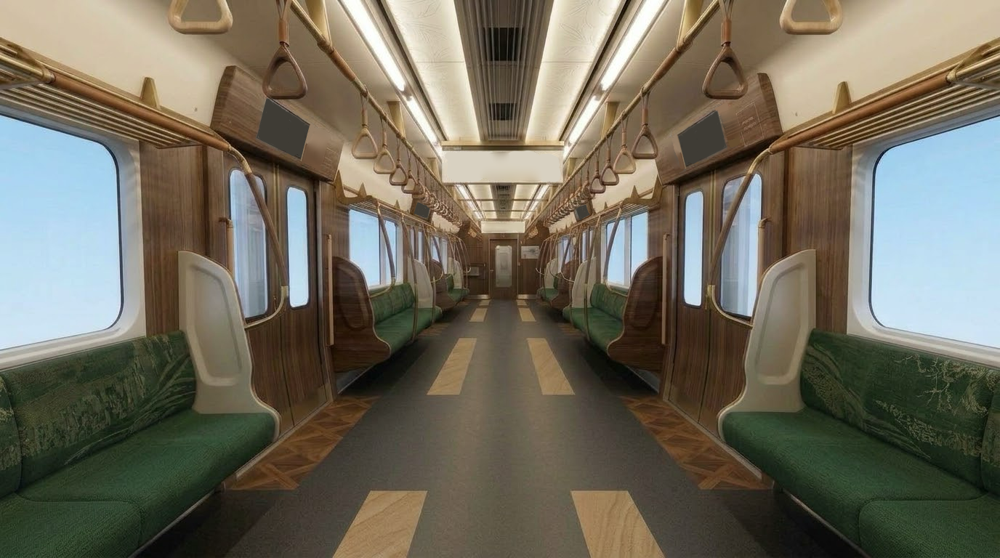
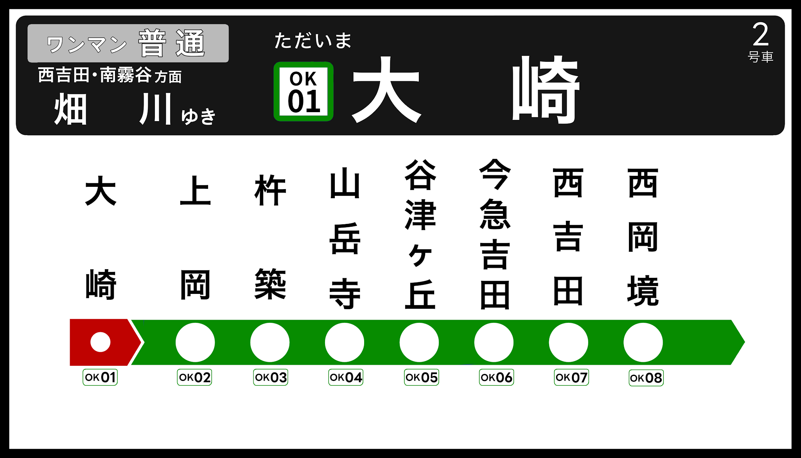

大川線に新型車両を導入します
今急電鉄では、安全性や快適性を高め、お客様に安心してご利用いただける鉄道を目指し、日々輸送品質の向上に努めております。このたび、大川線に既存の一般型車両「IE2400系」からの置き換えとして新型一般形車両「IE3100系」および「IE3150系」を導入することをお知らせいたします。
今回導入する車両は、既存車両の更新と輸送サービスの向上を目的として開発した新型車両です。また、各ドアにICカードリーダーを設置する新設備「らくタッチ」を導入し、改札未設置駅を含めた全ての駅でのICカード利用、乗降時間短縮を実現します。

1. 主な投入線区
- IE3100系：大川線（大崎～南霧谷、北新城～上田）
- IE3150系：大川線（西吉田～北新城）

2. 各車両の両数及びスケジュール
| 車種 | 両数 | 導入時期（予定） |
|---|---|---|
| IE3100系 | 3両 | 2027年3月～ |
| IE3150系 | 2両 | 2027年3月～ |
3. 車両概要

IE3100系・IE3150系は、基本的な車体設計および外観デザインを共通化した形式です。クリーム色と深緑色を組み合わせたIE2400系と同じカラーリングを採用し、大川線の車両デザインを継承しながら、現代的な外観に刷新しました。

車内は「山と風」をコンセプトに、沿線の豊かな自然をイメージしたデザインとしました。
座席には森林や山並みを想起させる深いグリーンを採用し、自然をモチーフとした柄を取り入れています。また、壁面や座席周辺には木目調の素材を使用、暖色の照明を採用することで、温かみと落ち着きのある空間を演出しました。
車内各所に植物をモチーフとした装飾を施すなど、細部にまで自然との調和を取り入れています。日常の通勤・通学から沿線へのお出かけまで、幅広いお客様に心地よくご利用いただける車内空間を目指しました。
4. IE3100系・IE3150系の主な特徴
(1) ICカード乗降システムの導入
ワンマン運転における乗降の利便性向上と、乗降時間の短縮を目的として、全てのドアにICカード乗降端末「らくタッチ」を設置します。
- 全ドアでのICカード乗降に対応
各ドアにICカードリーダーを設置し、乗車時・降車時のいずれも車両のドア付近にタッチすることで乗降処理が可能となります。※1※2 - 全国相互利用交通系ICカードに対応
「I-Loop」をはじめ、全国相互利用対象の交通系ICカードをご利用いただけます。また、ICカード連動型の定期券やフリーパスもご利用いただけます。 - フルカラー液晶画面を採用
利用案内やタッチ時の処理結果などを画面に表示し、直感的で分かりやすい操作を実現します。
※1 改札機および簡易改札機設置駅ではそのままお降りいただき、駅の改札機をご利用ください。
※2 きっぷをご利用のお客様は従来通り運転手後ろの運賃箱をご利用ください。
(2) 安全性の向上
- 車内防犯カメラおよび非常通報装置の設置数を増やし、お客様により安心して列車をご利用いただけるようになります。
- 車内・車外の異常検知システムを強化し、異常の早期発見・対応を支援します。
- ATC（自動列車制御装置）を搭載し、運行の安全性を向上します。
(3) 車内の快適性の向上
- 全車両にWiFiを設置し、山間部やトンネルでも快適に通信機器をご利用いただけます。
- IE3150系には一部座席にコンセントを設置し、長時間の移動でも安心して電子機器をご利用いただけます。
(4) お客様への情報提供の充実
- ドア上部の案内表示装置をLEDからLCDとし、お客様への情報提供をより充実させます。

(5) バリアフリー化の推進
- 車椅子やベビーカーをご利用のお客様のためのフリースペースを拡大します。
- トイレを電動車椅子に対応した大型のものとし、幅広いお客様にご利用いただけるようになります。
(6) 環境機能の向上
- 主回路機器にSiC（炭化ケイ素）半導体素子を採用することにより、車両の消費電力を抑制し、環境性能を向上します。
大川線向け新型車両の概要と既存車両との比較
| IE2400系（現行） | IE3100系（新型車両） | IE3150系（新型車両） | |
|---|---|---|---|
| 編成構成 | 3両編成 | 3両編成 | 2両編成 |
| 車体 | ステンレス製 | ステンレス製 | ステンレス製 |
| 車体長 | 20m級 | 20m級 | 20m級 |
| 車体幅 | 2.80m | 2.95m | 2.95m |
| 片側ドア数 | 3か所 | 3か所 | 3か所 |
| 最高運転速度 | 100km/h | 100km/h | 100km/h |
| 設計最高速度 | 110km/h | 110km/h | 110km/h |
| 制御方式 | サイリスタチョッパ制御 | SiC-VVVF | SiC-VVVF |
| ブレーキ | 回生ブレーキ | 回生ブレーキ | 回生ブレーキ |
| 保安装置 | ATS（自動列車停止装置） | ATC（自動列車制御装置） | ATC（自動列車制御装置） |
| ワンマン対応 | あり | あり | あり |
| 車内案内表示装置 | LED | LCD | LCD |
| トイレ | 1か所（2号車） | 1か所（電動車椅子対応・2号車） | 1か所（電動車椅子対応・2号車） |
| 座席配置 | セミクロスシート | ロングシート | 転換クロスシート・ボックスシート |
| フリースペース | 1か所（1号車） | 2か所（1・3号車） | 1か所（1号車） |
| 車内Wi-Fi | なし | あり | あり |
| コンセント | なし | なし | あり（一部座席） |
| 車内防犯カメラ | あり | あり | あり |
| 「らくタッチ」 | なし | あり | あり |
5. その他
- 2027年3月頃より、現在運行中のIE2400系はIE3100系・IE3150系へ順次置き換えます。
- 「らくタッチ」は置き換え完了予定の2027年7月頃より利用できます。利用開始日時は目処が立ち次第お知らせいたします。利用開始前は従来通り運転手後ろの運賃箱をご利用ください。
- 導入開始後、IE3150系導入区間では3両編成で運行されていた列車が2両編成で運行される場合があります。詳しくは導入開始後に時刻表でご確認ください。
※写真およびイラストはすべてイメージです。
※2026年11月現在の情報です。